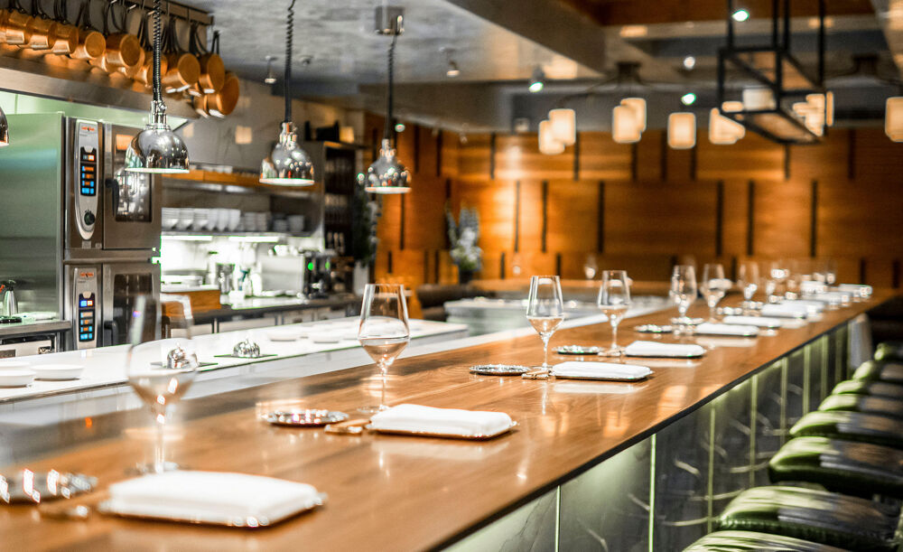

Chef's Table at Brooklyn Fare
Location: 431 W. 37th St., New York, 10018, United States
Chef's Table at Brooklyn Fare is Brooklyn Fare's three-Michelin-starred restaurant. Settle in for a dining experience featuring the cuisine of Chef César Ramirez. Inspired by Japanese cuisine and French technique, courses change to reflect products in season.
Masa

Location: 10 Columbus Circle, New York, 10019, United States
Masa is a Japanese and sushi restaurant located in Manhattan in New York City. The restaurant was opened by Chef Masa Takayama in 2004 and is considered one of the most expensive restaurants in the world, as well as the most expensive restaurant in New York City.
Le Bernardin

Location: 155 W. 51st St., New York, 10019, United States
Le Bernardin is a French seafood restaurant in Midtown Manhattan in New York City. Gilbert Le Coze and his sister Maguy Le Coze started the restaurant in Paris in 1972, where it was called Les Moines de St. Bernardin. They restarted the restaurant in New York in 1986, not long after receiving a third Michelin star.